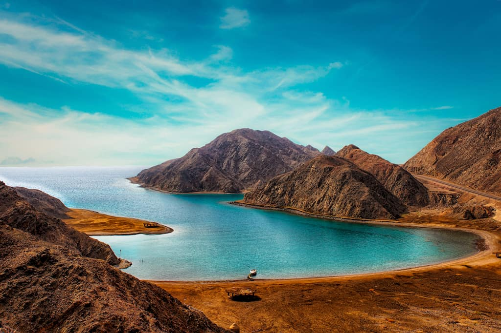

Modern EGYPT
“Traveling – it leaves you speechless, then turns you into a storyteller,” Ibn Battuta
About
-
Cairo – Egypt’s buzzing capital
Once you get over the chaos, the culture shock and in-your-face touts, this city is a traveller’s dream and easily one of the most important destinations to travel to in Egypt. History fans will also be in their element here with age-old traditions perfectly preserved in every corner of the city.
Of course, there’s also an endless supply of ancient temples, tombs, churches, monuments and the museums to explore. Don’t leave without visiting the famous Khan el-Khalili souk or other street markets, especially if you feel the need to stock up on everything from exotic looking carpets to brass trinkets.- - Other Places To Visit In Cairo
- Khan Al-Khalili
- Cairo Festival City Mall
- Salah El-Din Citadel
- Al Azhar Park
- Mount Sinai – Egypt’s stunning holy mountain
If you stay in the Cairo area this will be a 1-2 day trip for you. Although I would say Egypt’s Sinai Peninsula is definitely worth the journey and has a different feel to the rest of the country. Mount Sinai is a popular attraction in Egypt this area. It has huge religious significance having been mentioned many times in the book of Exodus, the Bible and the Quran.
In Christianity, it’s the place where Moses received the Ten Commandments. Hiking this holy mountain is a popular activity and many even choose to hike through the night or stay in a lodge to wake early (2 or 3 am) and watch a sunrise of biblical proportions.
- White Desert – one of Egypt’s most unique destinations

The fabled White Desert of Egypt is a very interesting area in Egypt can be found 28 miles north of the town of Farafra. The desert has an otherworldly beauty with bizarre, ghost-white rock formations sprouting from the desert sands. The strange structures are actually huge chalk formations created as a result of occasional sandstorms in the area. Take a four-wheel-drive through the desert or stay overnight for a truly surreal experience.
- The Fjord Bay (Taba) – one of Egypt’s top beauty spots

Taba is one of the most spectacular locations to pay a visit to in Egypt. It is a colourful little town positioned at the northern tip of the Gulf of Aqaba. Despite its small size, it can get busy because it is used as a border crossing into Israel. There are many attractions to enjoy in-and-around Taba including Red Sea Water World Taba Heights, Castle Zaman, Canyon Motor Sports, and the stunning Salah El-Din Castle.
The landscape is absolutely gorgeous and you will be constantly amazed by how scenic the locations are. Fjord Bay is a short drive from Taba. It is a natural bay that has become a popular spot for swimming, diving, hiking, climbing, boating, and many other outdoor activities. The bay is surrounding by rolling hills which gently sweep down to the stunning aqua-blue water. It is a picturesque location that you won’t forget.